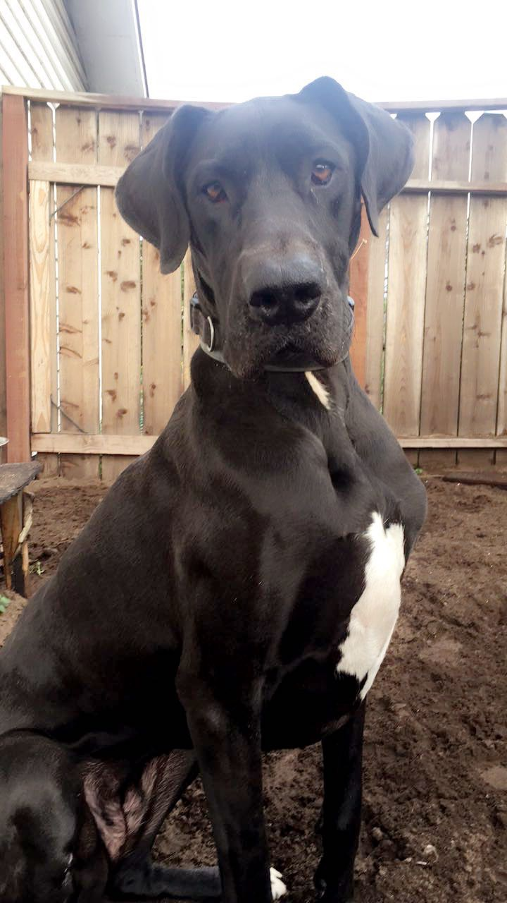

Lab 2
Hello world
hello my name is jasmine and i am 19 years old attending my second year at CSUMB. I live at home with my dad and older sister. I am currently engaged to my fiance (19) who is in the army. If I'm not at school im usually at work. on my days off I catch up with whatever I need to for the day and if i have time to relax I either play games on my computer or xbox. I dont usually go out all that much but i don't mind.
Omar and I met when he was working at costco with me. We soon later found out that we had CST 251 together. We both understood the struggles we both had at the end of the semester. Omar is a very approachable person once you get to know him. He's a great friend always asking how you are doing and is always willing to help.
